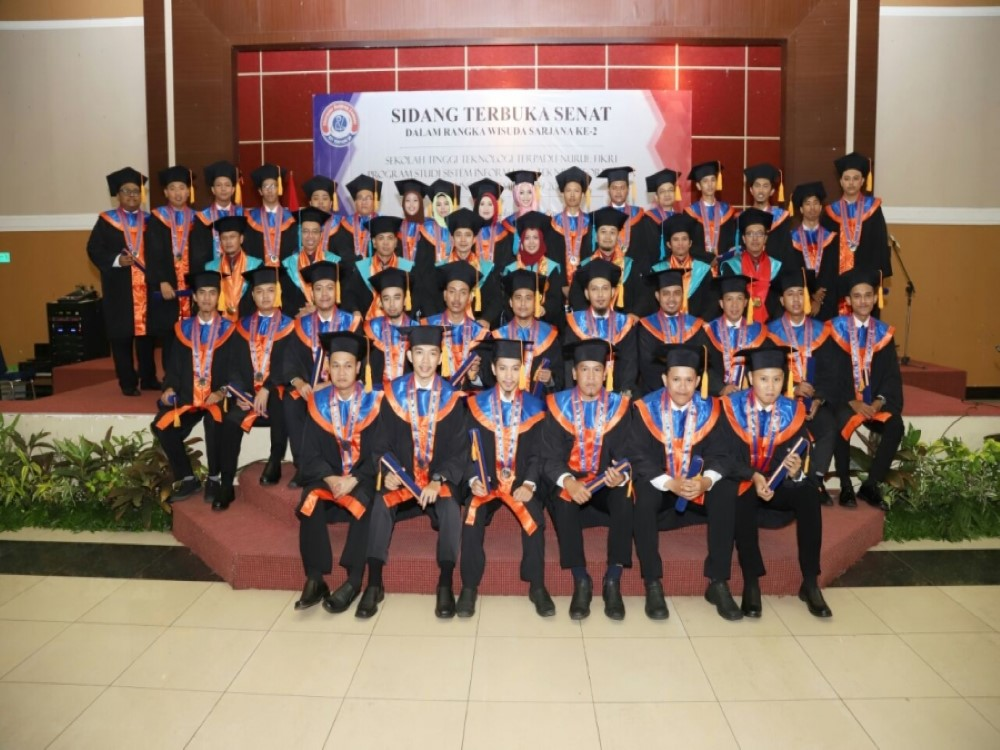

<!DOCTYPE html>
<html lang="en">
<head>
  <meta charset="utf-8">
  <meta name="viewport" content="width=device-width, initial-scale=1">
  <title>Dashboard</title>

  <!-- Google Font: Source Sans Pro -->
  <link rel="stylesheet" href="https://fonts.googleapis.com/css?family=Source+Sans+Pro:300,400,400i,700&display=fallback">
  <!-- Font Awesome -->
  <link rel="stylesheet" href="vendor/plugins/fontawesome-free/css/all.min.css">
  <!-- Theme style -->
  <link rel="stylesheet" href="vendor/dist/css/adminlte.min.css">
  <!-- bootstrap -->
  
</head>
<body class="hold-transition sidebar-mini" style="font-family: calibri;">
<!-- Site wrapper -->
<div class="wrapper">
  <!-- Navbar -->
  <nav class="main-header navbar navbar-expand navbar-white navbar-light">
    <!-- Left navbar links -->
    <ul class="navbar-nav">
      <li class="nav-item">
        <a class="nav-link" data-widget="pushmenu" href="#" role="button"><i class="fas fa-bars"></i></a>
      </li>
    
    </ul>

    <!-- Right navbar links -->
    <ul class="navbar-nav ml-auto">

  </nav>
  <!-- /.navbar -->

  <!-- Main Sidebar Container -->
  <aside class="main-sidebar sidebar-dark-primary elevation-4">
    <!-- Brand Logo -->
    <a href="../../index3.html" class="brand-link">
      
      <span class="brand-text font-weight-light">SIPAK STT-NF</span>
    </a>

    <!-- Sidebar -->
    <div class="sidebar">
      <!-- Sidebar user (optional) -->
      <div class="user-panel mt-3 pb-3 mb-3 d-flex">
        <div class="image">
          
        </div>
        <div class="info">
          <a href="#" class="d-block">DAZZLING Admin</a>
        </div>
      </div>

      <!-- SidebarSearch Form -->
      <div class="form-inline">
        <div class="input-group" data-widget="sidebar-search">
          <input class="form-control form-control-sidebar" type="search" placeholder="Search" aria-label="Search">
          <div class="input-group-append">
            <button class="btn btn-sidebar">
              <i class="fas fa-search fa-fw"></i>
            </button>
          </div>
        </div>
      </div>

      <!-- Sidebar Menu -->
      <nav class="mt-2">
        <ul class="nav nav-pills nav-sidebar flex-column" data-widget="treeview" role="menu" data-accordion="false">
          <!-- Add icons to the links using the .nav-icon class
               with font-awesome or any other icon font library -->
               <li class="nav-item">
                <a href="dashboard.html" class="nav-link">
                  <i class="nav-icon fas fa-home"></i>
                  <p>
                    Dashboard
                  </p>
                </a>
              </li>
              <li class="nav-item">
                <a href="kendaraan.html" class="nav-link">
                  <i class="fas fa-motorcycle"></i>
                  <p>
                    Kendaraan
                  </p>
                </a>
              </li>
              <li class="nav-item">
                <a href="data_kendaraan.html" class="nav-link">
                  <i class="fas fa-circle"></i>
                  <p>
                    Data Kendaraan
                  </p>
                </a>
              </li>
              <li class="nav-item">
                <a href="data_parkir.html" class="nav-link">
                  <i class="fas fa-circle"></i>
                  <p>
                    Data Parkir
                  </p>
                </a>
              </li>
              <li class="nav-item">
                <a href="data_gedung.html" class="nav-link">
                  <i class="fas fa-school"></i>
                  <p>
                    Gedung
                  </p>
                </a>
              </li>
              <li class="nav-item">
                <a href="area_parkir.html" class="nav-link">
                  <i class="fas fa-parking"></i>
                  <p>
                    Area Parkir
                  </p>
                </a>
              </li>
              <li class="nav-item">
                <a href="login.html" class="nav-link">
                  <i class="fas fa-check-square"></i>
                  <p>
                    Logout
                  </p>
                </a>
              </li>
        </ul>
      </nav>
      <!-- /.sidebar-menu -->
  </aside>

  <!-- Content Wrapper. Contains page content -->
  <div class="content-wrapper">
    <!-- Content Header (Page header) -->
    <section class="content-header">
      <div class="container-fluid">
        <div class="row mb-2">
          <div class="col-sm-12">
            <h1>Dashboard</h1>
          </div>
           <!-- jumbotron -->
  <div class="jumbotron mx-5 mt-5">
    <h1 class="display-4 text-justify pl-4 ml-3">Selamat datang di Aplikasi Parkir STT-NF</h1>
    <p class="lead text-justify p-4 m-3">Melihat repotnya petugas parkir yang mengatur kendaraan karena terlalu padat, akhirnya kami berinisiatif membuat
      aplikasi sistem parkir sebagai sarana yang memudahkan pekerjaan sehingga petugas parkir tidak perlu menghabiskan tenaganya 
      untuk mengatur. Kami dengan sepenuh hati akan memberikan layanan jasa parkir untuk sivitas STT-NF.
       Dengan adanya aplikasi ini diharapkan dapat memberikan manfaat dari sistem parkir.</p>
    <hr class="my-4" />
    <p class="lead text-justify p-4 m-3">Silahkan daftar kendaraan anda dengan klik tombol dibawah ini!</p>
    <div class="pl-4 ml-3"><a class="btn btn-primary btn-lg" href="kendaraan.html" role="button">Daftar Kendaraan Anda</a></div>
  </div>
  <!-- end jumbotron -->
  <div class="container">
    <h1 class="text-center">Profile Kampus STT-NF</h1>
    <div class="row pt-4">
      <div class="col-sm">
        
      </div>
      <div class="col-sm">
        
      </div>
      <div class="col-sm">
        
      </div>
      <div class="col-sm">
        
      </div>
    </div>
  </div>
  <div class="container mx-5 mt-4 mb-4" id="berita">
    <h1 class="text-center">Kampus Berita</h1>
    <div class="row">
      <div class="col-sm text-justify">
        <b>Berita 1</b>
        <p>Sekolah Tinggi Teknologi Terpadu Nurul Fikri telah mengadakan Kuliah Umum dengan tema “Teknologi Digital 
          (Peluang, Tantangan, dan Ikhtiar Membersamainya) pada hari Sabtu, 25 Desember 2021 bertempat di Auditorium Kampus B 
          STT-NF secara luring (offline & online) untuk online dapat diakses melalui aplikasi Zoom dan Live Streaming di Youtube STT Terpadu Nurul Fikri.
          Kuliah Umum ini mendatangkan narasumber yang profesional di bidangnya yaitu Dr. Ir. Bambang Priantono, M.T. 
          (PROFESSIONAL BUSINESS COACH STARTUP ENTHUSIAST). Beliau pernah menjabat sebagai Komisioner Badan Regulasi & 
          Telekomunikasi Indonesia (BRTI), General Manajer di PT Indosat Tbk., Direktur Operasional di PT Aplikanusa Lintasarta, Direktur di PT Indosat M2, Komisaris di PT Artajasa Pembayaran Elektronis.
           Peserta kegiatan ini terdiri dari Ketua STT-NF, Dr. Lukman Rosyidi, M.T., M.M., Dosen serta mahasiswa-mahasiswi STT-NF.</p>
      </div>
      <div class="col-sm text-justify">
        <b>Berita 2</b>
        <p>PKM merupakan salah satu wujud implementasi Tridharma Perguruan Tinggi yang diluncurkan oleh Direktorat Jenderal Pendidikan Tinggi di bawah pengelolaan Direktorat Pembelajaran dan Kemahasiswaan (Belmawa) merupakan salah satu upaya untuk menumbuhkan, mewadahi, dan mewujudkan ide kreatif serta inovatif mahasiswa.
          STT NF melakukan Sosialisasi PKM kepada seluruh mahasiswa STT-NF yang diselenggarakan pada Rabu, 05 Januari 2022. Pukul 15.30-17.00 WIB melalui Zoom Meeting. Dengan diadakan Sosialisasi dan pembukaan PKM, mahasiswa dapat ikut berpartisipasi dalam acara PKM 2022.
          Persyaratan:
          Mahasiswa Aktif STT Terpadu NF
          1 team terdiri dari minimal 3 orang dan maksimal 5 orang, diperbolehkan dari jurusan dan angkatan yang berbeda.
          Dengan diadakannya PKM semoga dapat mewujudkan ide kreatif serta inovatif mahasiswa. Pendaftaran PKM telah dibuka dengan batas pendaftaran 06 – 13 Januari 2022.
          </p>
      </div>
    </div>
  </div> 
          
  <!-- /.content-wrapper -->
</div>
  <!-- footer -->
  <footer class="main-footer mx-5 mt-5 d-flex justify-content-between">
    <div>
      <!-- <div class="d-none d-sm-block"><b>Version</b> 3.1.0</div> -->
      <strong>Develop &copy; 2021 <a href="https://adminlte.io">DAZZLING</a>.</strong> - STTNF.
    </div>
    <div>
      <i class="fab fa-instagram fa-2x"></i>
      <i class="fab fa-linkedin-in fa-2x"></i>
      <i class="fab fa-facebook fa-2x"></i>
    </div>
  </footer>
  <!-- end footer -->
<!-- ./wrapper -->

<!-- jQuery -->
<script src="vendor/plugins/jquery/jquery.min.js"></script>
<!-- Bootstrap 4 -->
<script src="vendor/plugins/bootstrap/js/bootstrap.bundle.min.js"></script>
<!-- AdminLTE App -->
<script src="vendor/dist/js/adminlte.min.js"></script>
<!-- AdminLTE for demo purposes -->
<script src="vendor/dist/js/demo.js"></script>
</body>
</html>